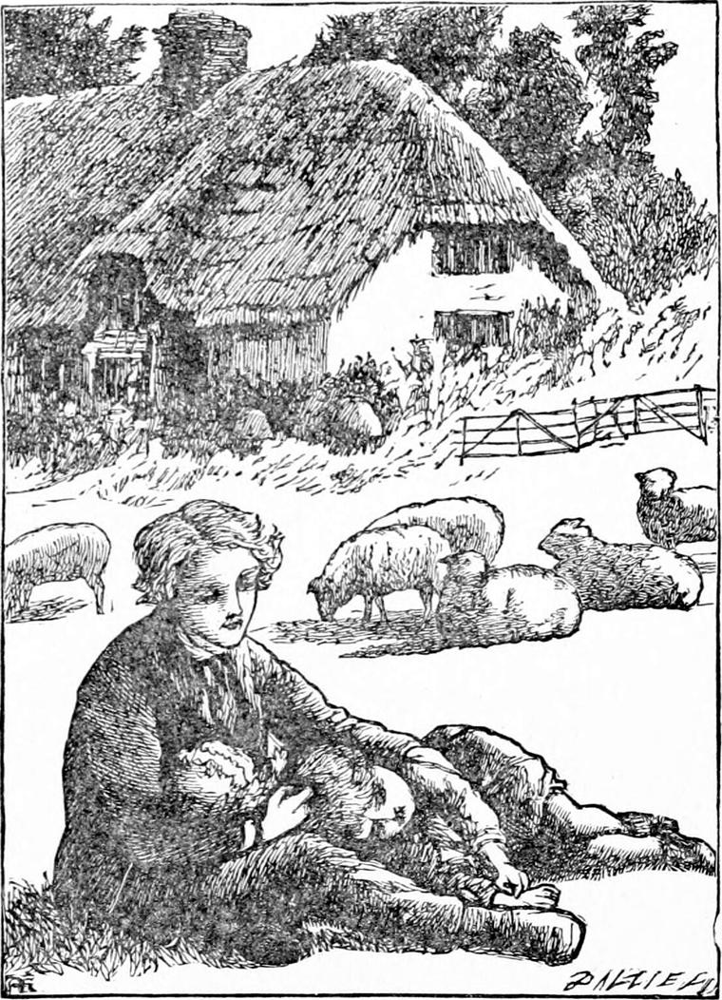
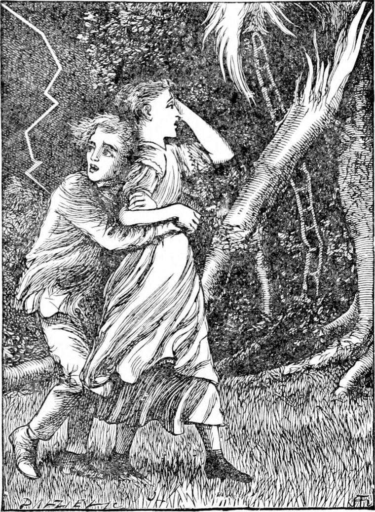
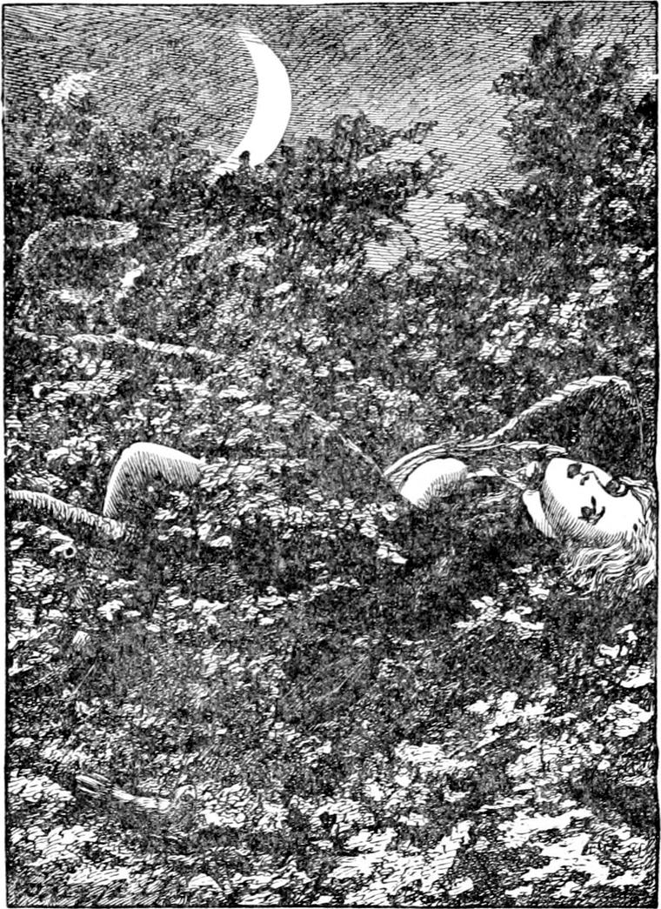

MR. RAYMOND'S house was called The Mound, because it stood upon a little steep knoll, so smooth and symmetrical that it showed itself at once to be artificial. It had, beyond doubt, been built for Queen Elizabeth as a hunting tower—a place, namely, from the top of which you could see the country for miles on all sides, and so be able to follow with your eyes the flying deer and the pursuing hounds and horsemen. The mound had been cast up to give a good basement-advantage over the neighbouring heights and woods. There was a great quarry-hole not far off, brim-full of water, from which, as the current legend stated, the materials forming the heart of the mound—a kind of stone unfit for building—had been dug. The house itself was of brick, and they said the foundations were first laid in the natural level, and then the stones and earth of the mound were heaped about and between them, so that its great height should be well buttressed.
Joseph and his wife lived in a little cottage a short way from the house. It was a real cottage, with a roof of thick thatch, which, in June and July, the wind sprinkled with the red and white petals it shook from the loose topmost sprays of the rose-trees climbing the walls. At first Diamond had a nest under this thatch—a pretty little room with white muslin curtains, but afterwards Mr. and Mrs. Raymond wanted to have him for a page in the house, and his father and mother were quite pleased to have him employed without his leaving them. So he was dressed in a suit of blue, from which his pale face and fair hair came out like the loveliest blossom, and took up his abode in the house.
“Would you be afraid to sleep alone, Diamond?” asked his mistress.
“I don't know what you mean, ma'am,” said Diamond. “I never was afraid of anything that I can recollect—not much, at least.”
“There's a little room at the top of the house—all alone,” she returned; “perhaps you would not mind sleeping there?”
“I can sleep anywhere, and I like best to be high up. Should I be able to see out?”
“I will show you the place,” she answered; and taking him by the hand, she led him up and up the oval-winding stair in one of the two towers.
Near the top they entered a tiny little room, with two windows from which you could see over the whole country. Diamond clapped his hands with delight.
“You would like this room, then, Diamond?” said his mistress.
“It's the grandest room in the house,” he answered. “I shall be near the stars, and yet not far from the tops of the trees. That's just what I like.”
I daresay he thought, also, that it would be a nice place for North Wind to call at in passing; but he said nothing of that sort. Below him spread a lake of green leaves, with glimpses of grass here and there at the bottom of it. As he looked down, he saw a squirrel appear suddenly, and as suddenly vanish amongst the topmost branches.
“Aha! little squirrel,” he cried, “my nest is built higher than yours.”
“You can be up here with your books as much as you like,” said his mistress. “I will have a little bell hung at the door, which I can ring when I want you. Half-way down the stair is the drawing-room.”
So Diamond was installed as page, and his new room got ready for him.
It was very soon after this that I came to know Diamond. I was then a tutor in a family whose estate adjoined the little property belonging to The Mound. I had made the acquaintance of Mr. Raymond in London some time before, and was walking up the drive towards the house to call upon him one fine warm evening, when I saw Diamond for the first time. He was sitting at the foot of a great beech-tree, a few yards from the road, with a book on his knees. He did not see me. I walked up behind the tree, and peeping over his shoulder, saw that he was reading a fairy-book.
“What are you reading?” I said, and spoke suddenly, with the hope of seeing a startled little face look round at me. Diamond turned his head as quietly as if he were only obeying his mother's voice, and the calmness of his face rebuked my unkind desire and made me ashamed of it.
“I am reading the story of the Little Lady and the Goblin Prince,” said Diamond.
“I am sorry I don't know the story,” I returned. “Who is it by?”
“Mr. Raymond made it.”
“Is he your uncle?” I asked at a guess.
“No. He's my master.”
“What do you do for him?” I asked respectfully.
“Anything he wishes me to do,” he answered. “I am busy for him now. He gave me this story to read. He wants my opinion upon it.”
“Don't you find it rather hard to make up your mind?”
“Oh dear no! Any story always tells me itself what I'm to think about it. Mr. Raymond doesn't want me to say whether it is a clever story or not, but whether I like it, and why I like it. I never can tell what they call clever from what they call silly, but I always know whether I like a story or not.”
“And can you always tell why you like it or not?”
“No. Very often I can't at all. Sometimes I can. I always know, but I can't always tell why. Mr. Raymond writes the stories, and then tries them on me. Mother does the same when she makes jam. She's made such a lot of jam since we came here! And she always makes me taste it to see if it'll do. Mother knows by the face I make whether it will or not.”
At this moment I caught sight of two more children approaching. One was a handsome girl, the other a pale-faced, awkward-looking boy, who limped much on one leg. I withdrew a little, to see what would follow, for they seemed in some consternation. After a few hurried words, they went off together, and I pursued my way to the house, where I was as kindly received by Mr. and Mrs. Raymond as I could have desired. From them I learned something of Diamond, and was in consequence the more glad to find him, when I returned, seated in the same place as before.
“What did the boy and girl want with you, Diamond?” I asked.
“They had seen a creature that frightened them.”
“And they came to tell you about it?”
“They couldn't get water out of the well for it. So they wanted me to go with them.”
“They're both bigger than you.”
“Yes, but they were frightened at it.”
“And weren't you frightened at it?”
“No.”
“Why?”
“Because I'm silly. I'm never frightened at things.”
I could not help thinking of the old meaning of the word silly.
“And what was it?” I asked.
“I think it was a kind of an angel—a very little one. It had a long body and great wings, which it drove about it so fast that they grew a thin cloud all round it. It flew backwards and forwards over the well, or hung right in the middle, making a mist of its wings, as if its business was to take care of the water.”
“And what did you do to drive it away?”
“I didn't drive it away. I knew, whatever the creature was, the well was to get water out of. So I took the jug, dipped it in, and drew the water.”
“And what did the creature do?”
“Flew about.”
“And it didn't hurt you?”
“No. Why should it? I wasn't doing anything wrong.”
“What did your companions say then?”
“They said—`Thank you, Diamond. What a dear silly you are!'”
“And weren't you angry with them?”
“No! Why should I? I should like if they would play with me a little; but they always like better to go away together when their work is over. They never heed me. I don't mind it much, though. The other creatures are friendly. They don't run away from me. Only they're all so busy with their own work, they don't mind me much.”
“Do you feel lonely, then?”
“Oh, no! When nobody minds me, I get into my nest, and look up. And then the sky does mind me, and thinks about me.”
“Where is your nest?”
He rose, saying, “I will show you,” and led me to the other side of the tree.
There hung a little rope-ladder from one of the lower boughs. The boy climbed up the ladder and got upon the bough. Then he climbed farther into the leafy branches, and went out of sight.
After a little while, I heard his voice coming down out of the tree.
“I am in my nest now,” said the voice.
“I can't see you,” I returned.
“I can't see you either, but I can see the first star peeping out of the sky. I should like to get up into the sky. Don't you think I shall, some day?”
“Yes, I do. Tell me what more you see up there.”
“I don't see anything more, except a few leaves, and the big sky over me. It goes swinging about. The earth is all behind my back. There comes another star! The wind is like kisses from a big lady. When I get up here I feel as if I were in North Wind's arms.”
This was the first I heard of North Wind.
The whole ways and look of the child, so full of quiet wisdom, yet so ready to accept the judgment of others in his own dispraise, took hold of my heart, and I felt myself wonderfully drawn towards him. It seemed to me, somehow, as if little Diamond possessed the secret of life, and was himself what he was so ready to think the lowest living thing—an angel of God with something special to say or do. A gush of reverence came over me, and with a single goodnight, I turned and left him in his nest.
I saw him often after this, and gained so much of his confidence that he told me all I have told you. I cannot pretend to account for it. I leave that for each philosophical reader to do after his own fashion. The easiest way is that of Nanny and Jim, who said often to each other that Diamond had a tile loose. But Mr. Raymond was much of my opinion concerning the boy; while Mrs. Raymond confessed that she often rang her bell just to have once more the pleasure of seeing the lovely stillness of the boy's face, with those blue eyes which seemed rather made for other people to look into than for himself to look out of.
It was plainer to others than to himself that he felt the desertion of Nanny and Jim. They appeared to regard him as a mere toy, except when they found he could minister to the scruple of using him—generally with success. They were, however, well-behaved to a wonderful degree; while I have little doubt that much of their good behaviour was owing to the unconscious influence of the boy they called God's baby.

One very strange thing is that I could never find out where he got some of his many songs. At times they would be but bubbles blown out of a nursery rhyme, as was the following, which I heard him sing one evening to his little Dulcimer. There were about a score of sheep feeding in a paddock near him, their white wool dyed a pale rose in the light of the setting sun. Those in the long shadows from the trees were dead white; those in the sunlight were half glorified with pale rose.
And didn't know where to find them;
They were over the height and out of sight,
Trailing their tails behind them.
Jump'd up and set out to find them:
“The silly things, they've got no wings,
And they've left their trails behind them:
And so I shall follow and find them;”
For wherever a tail had dragged a trail,
The long grass grew behind them.
Were glittering in the sun.
She threw down her book, and caught up her crook,
And after her sheep did run.
The grass grew higher and higher;
Till over the hill the sun began
To set in a flame of fire.
And the grass grew higher and higher;
When she reached its crown, the sun was down,
And had left a trail of fire.
And no more trail behind them!
Yes, yes! they were there—long-tailed and fair,
But, alas! she could not find them.
With their tails all white behind them,
Her sheep they did run in the trail of the sun;
She saw them, but could not find them.
But she knew they were her sheep:
She sat down to cry, and look up at the sky,
But she cried herself asleep.
And the wind blew from the sky;
And strange things took place that shun the day's face,
Because they are sweet and shy.
A hundred little lambs
Did pluck and eat the grass so sweet
That grew in the trails of their dams.
And wiped the tears that did blind her.
And nibble, nibble crop! without a stop!
The lambs came eating behind her.
With three times as many sheep.
In a month or more, they'll be as big as before,
And then she'll laugh in her sleep.
When they've got their bushiest tails,
Their grown up game should be just the same,
And she have to follow their trails?
And do not know where to find them;
'Tis after the sun the mothers have run,
And there are their lambs behind them.
I confess again to having touched up a little, but it loses far more in Diamond's sweet voice singing it than it gains by a rhyme here and there.
Some of them were out of books Mr. Raymond had given him. These he always knew, but about the others he could seldom tell. Sometimes he would say, “I made that one.” but generally he would say, “I don't know; I found it somewhere;” or “I got it at the back of the north wind.”
One evening I found him sitting on the grassy slope under the house, with his Dulcimer in his arms and his little brother rolling on the grass beside them. He was chanting in his usual way, more like the sound of a brook than anything else I can think of. When I went up to them he ceased his chant.
“Do go on, Diamond. Don't mind me,” I said.
He began again at once. While he sang, Nanny and Jim sat a little way off, one hemming a pocket-handkerchief, and the other reading a story to her, but they never heeded Diamond. This is as near what he sang as I can recollect, or reproduce rather.
To my little nest in the air?
You would see the sky like a clear blue cup
Turned upside downwards there.
To my little nest in the tree?
My child with cries would trouble the air,
To get what she could but see.
For all your crying and grief?
Not a star would you clutch of all you see—
You could only gather a leaf.
Content to see from afar,
You would find in your hand a withering leaf,
In your heart a shining star.
As Diamond went on singing, it grew very dark, and just as he ceased there came a great flash of lightning, that blinded us all for a moment. Dulcimer crowed with pleasure; but when the roar of thunder came after it, the little brother gave a loud cry of terror. Nanny and Jim came running up to us, pale with fear. Diamond's face, too, was paler than usual, but with delight. Some of the glory seemed to have clung to it, and remained shining.

“You're not frightened—are you, Diamond?” I said.
“No. Why should I be?” he answered with his usual question, looking up in my face with calm shining eyes.
“He ain't got sense to be frightened,” said Nanny, going up to him and giving him a pitying hug.
“Perhaps there's more sense in not being frightened, Nanny,” I returned. “Do you think the lightning can do as it likes?”
“It might kill you,” said Jim.
“Oh, no, it mightn't!” said Diamond.
As he spoke there came another great flash, and a tearing crack.
“There's a tree struck!” I said; and when we looked round, after the blinding of the flash had left our eyes, we saw a huge bough of the beech-tree in which was Diamond's nest hanging to the ground like the broken wing of a bird.
“There!” cried Nanny; “I told you so. If you had been up there you see what would have happened, you little silly!”
“No, I don't,” said Diamond, and began to sing to Dulcimer. All I could hear of the song, for the other children were going on with their chatter, was—
And the mouse came down.
Dickery, dickery, dock!
Then there came a blast of wind, and the rain followed in straight-pouring lines, as if out of a watering-pot. Diamond jumped up with his little Dulcimer in his arms, and Nanny caught up the little boy, and they ran for the cottage. Jim vanished with a double shuffle, and I went into the house.
When I came out again to return home, the clouds were gone, and the evening sky glimmered through the trees, blue, and pale-green towards the west, I turned my steps a little aside to look at the stricken beech. I saw the bough torn from the stem, and that was all the twilight would allow me to see. While I stood gazing, down from the sky came a sound of singing, but the voice was neither of lark nor of nightingale: it was sweeter than either: it was the voice of Diamond, up in his airy nest:—

They go and they come;
But the stars and the stillness
Are always at home.
And then the voice ceased.
“Good-night, Diamond,” I said.
“Good-night, sir,” answered Diamond.
As I walked away pondering, I saw the great black top of the beech swaying about against the sky in an upper wind, and heard the murmur as of many dim half-articulate voices filling the solitude around Diamond's nest.